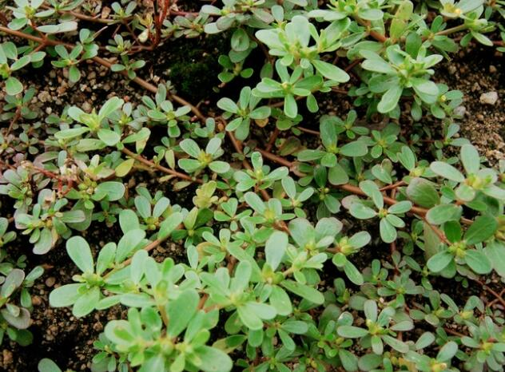

春天常见的马齿苋，分享3种营养做法，清香可口，凉拌调馅都好吃
进入4月份以后，能明显感觉到气温又上升了， 阴气下降，阳气上升，万物开始“吐故纳新”，大地一片绿油油的景象，尤其在一场小雨过后，植物肥嫩的茎叶，越发精神，清明节前后，除了扫墓祭祖，缅怀先人，也是踏青游玩，亲近自然的好时机，放风筝、挖野菜，收获满满，大家玩得不亦说乎。

打小在农村长大，习惯了这里的生活，小时候奶奶经常带着我去挖野菜，荠菜、刺刺菜、蒲公英、马兰头、麦蒿等，挎着菜篮子出发，一下午的时间，连玩带挖，假期别忘了挖一些野菜，品尝一下春天的气息。
就拿常见的马齿苋来说，过去都弄回来剁碎喂猪，现在可倒好，直接登上了人们的餐桌，而且还流传开来，马齿苋确实能吃，清香美味，含有胡萝卜素和微量元素，除此之外，它还有一定的药用价值，有清热利湿、解毒消肿、消炎、止渴、利尿的作用。
本站文章均来自互联网，仅供学习参考，如有侵犯您的版权，请邮箱联系我们删除！
 上一篇
上一篇